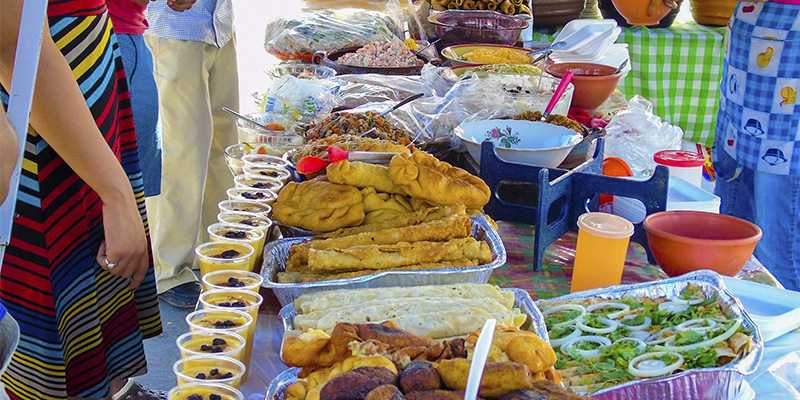

Influencia de la Historia y las Tradiciones
La historia precolombina de Guatemala dejó una marca profunda en su cocina. Muchos de los ingredientes básicos como el maíz, los frijoles, los chiles y las hierbas son herencia de las culturas indígenas, especialmente la civilización Maya. Estos ingredientes se han utilizado durante siglos y siguen siendo la base de la alimentación guatemalteca.
La llegada de los conquistadores españoles en el siglo XVI introdujo nuevos ingredientes y técnicas culinarias en Guatemala. El trigo, el arroz, el ganado y varios tipos de frutas y verduras fueron introducidos por los españoles y se integraron en la dieta local. Además, la colonización española también dejó su huella en la forma en que se preparan ciertos platos y en el uso de especias y condimentos.
La cocina guatemalteca es el resultado de la fusión de las tradiciones indígenas y españolas, así como de la influencia de otras culturas como la africana y la caribeña. Esta fusión cultural se refleja en una amplia variedad de platos y sabores únicos que son característicos de Guatemala.
